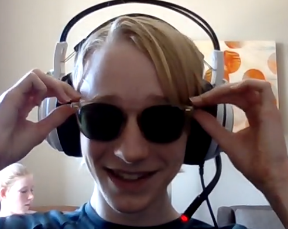

Meet The Team!
We are so thankful for our team as they are the core of our organization. We believe that a strong and connected team is one of the most important parts of any group. Because of this we would like everyone to have an equal voice, so scroll down and learn about each and every individial of the whole team!
-

Jonathan Tang
Founder, Lead Web Developer
Hi, I am Jonathan Tang and am currently a sophomore at IHS in Issaquah Washington. I have always seen climate change as an issue that is very near and dear to me. Growing up in the Pacific Northwest the outdoors were always a big aspect of my life, and the prospect of its beauty being taken at the hands of fellow humans always made me sad. Beacause of this I created the PWC not just to express my thoughts but to be able to connect with other people that felt the same.
-

Ashwin Suresh
Founder, Writer
Hi, I am Ashwin Suresh, I am currently a sophomore in Washington State. For me, climate change and environmental issues are always something I have respected on a deeper level. I spent my childhood in big cities in India and California which meant I saw the other end of the spectrum, where the environment took a backseat most of the time. Because of these experiences, I founded the PWC with Jonathan to inform others and help them truly understand some of the problems surrounding them and some things they can do to impact the world positively.
-

Calvin Rodrigue
Assistant Web Developer, Lead Programmer
Hi, I am Calvin Rodrigue, I am currently a sophomore at Issaquah High School. I care deeply about the environment, and want to do everything in my power to help it. It is important to me that our planet survives and thrives, because it is the only one we have. I was born in and have grown up on the West Coast, which is why the environment here matters so much. I want to do everything in my power to help it.
-
Pavan Pervaje
Position
Bio
-
Venkata Krishna Abhirham Tarigoppula
Position
Bio